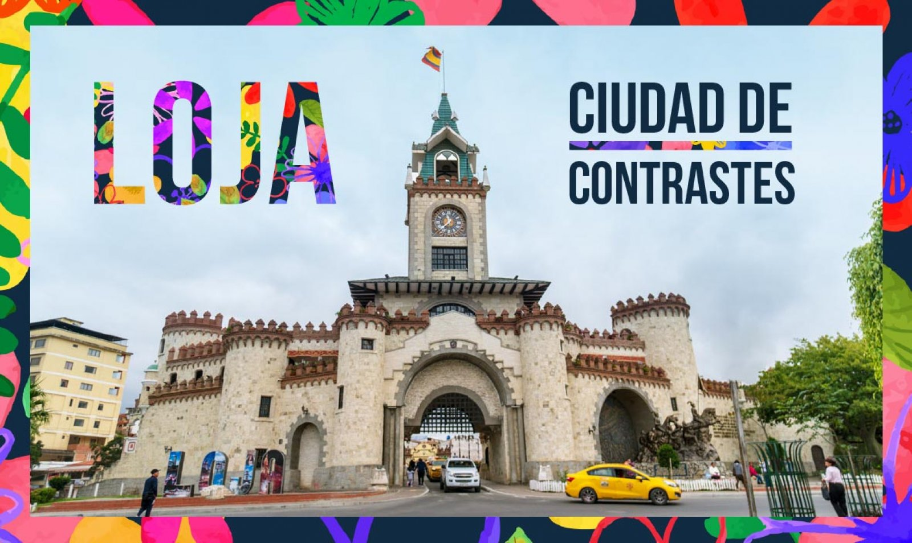
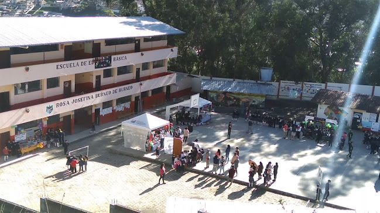
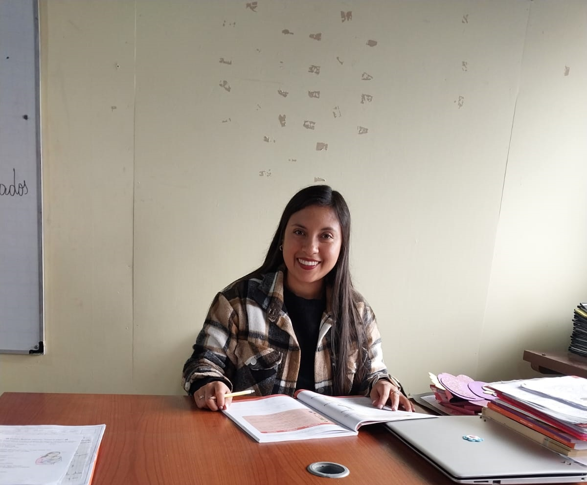

BIENVENIDOS AL RINCÓN DE LA LECTURA VIRTUAL
Este espacio ha sido creado para compartir historias relevantes de la comunidad, fortalecer la identidad cultural y motivar el amor por la lectura en los niños.

Ciudad de Loja
Ubicación: Loja es una ciudad del sur del Ecuador y es la capital de la provincia de Loja. Se encuentra cerca de la frontera con Perú y es conocida por su clima agradable y sus paisajes montañosos.
¿Por qué es famosa? Loja es llamada la “Capital Cultural y Musical del Ecuador” porque tiene una gran tradición artística, especialmente en la música, literatura y arte.
Cultura: Los lojanos son conocidos por ser amables y trabajadores. Existe mucho interés por la música, el arte y la educación. En Loja se realizan conciertos, festivales y actividades culturales durante todo el año.
Música: Loja tiene muchos músicos y compositores famosos. Aquí se encuentra el importante Conservatorio de Música Salvador Bustamante Celi.
Comidas típicas:
- Repe lojano: sopa hecha con guineo verde, queso y leche.
- Cecina lojana: carne de cerdo sazonada y asada.
- Tamales lojanos.
- Humitas.
- Miel con quesillo.
- Horchata lojana: bebida preparada con varias hierbas medicinales y flores.
Tradiciones y fiestas:
- Fiesta de la Virgen del Cisne: Es una de las celebraciones religiosas más importantes del Ecuador. Miles de personas participan en peregrinaciones.
- Festival Internacional de Artes Vivas: Es un evento cultural muy importante donde participan artistas nacionales e internacionales.
Lugares turísticos: Parque Nacional Podocarpus, Puerta de la Ciudad, Parque Jipiro, Iglesias y parques del centro histórico.
Economía: Se basa en la agricultura, ganadería, comercio, turismo y educación universitaria.
Datos curiosos: Tiene gran cantidad de estudiantes universitarios, es una de las ciudades más tranquilas y limpias, y su clima es templado todo el año.

Institución Receptora
La Escuela de Educación Básica Rosa Josefina Burneo de Burneo, ubicada en la ciudad de Loja, en el barrio Turunuma, en la Av. Barcelona, cerca del ECU 911, parroquia Sucre, fue parte del proyecto de vinculación con la sociedad titulado “Cuentos, costumbres, tradiciones y saberes para la interculturalidad en instituciones educativas”, el cual busca rescatar y valorar los saberes ancestrales, las tradiciones locales y la riqueza cultural de nuestras comunidades a través de la creación literaria y la práctica pedagógica.
En el marco de este proyecto, se elaboró un cuento, pensado especialmente para enriquecer los procesos educativos desde un enfoque intercultural. Este material, adaptado al contexto de la institución y sus estudiantes, promueve la lectura, la reflexión y el diálogo entre culturas, fortaleciendo así el sentido de identidad y pertenencia.
Nos complace informar que este cuento y el material producido quedarán en la Escuela de Educación Básica Rosa Josefina Burneo de Burneo, donde servirán como recurso educativo para docentes y estudiantes. Su uso contribuirá a dinamizar las clases, promover el pensamiento crítico y fomentar el respeto a la diversidad cultural.

Biografía del Autor
La Mgtr. Andrea Betancourt es una destacada educadora y profesional clave en la guía metodológica y creación literaria de este proyecto de vinculación con la sociedad. Su labor fomenta el rescate cultural, la identidad lojana y el amor por la lectura en las aulas de educación inicial.

CUENTO 2. LEYENDA DE LA VIRGEN DEL ROSARIO

CUENTO 3. EL CAMINO DE LOS AHORCADOS